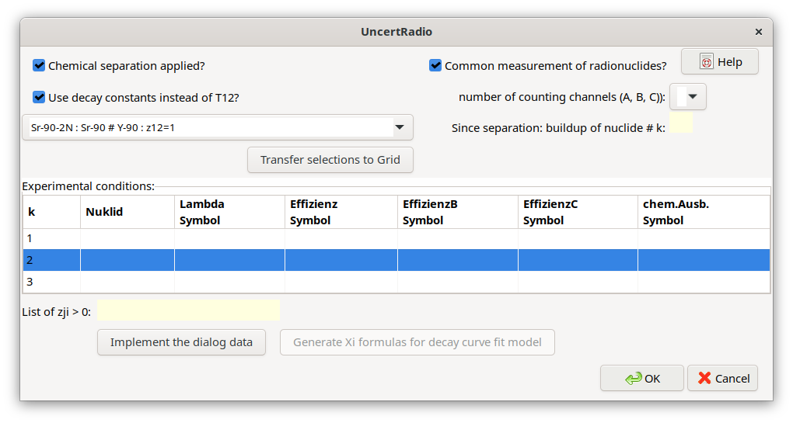
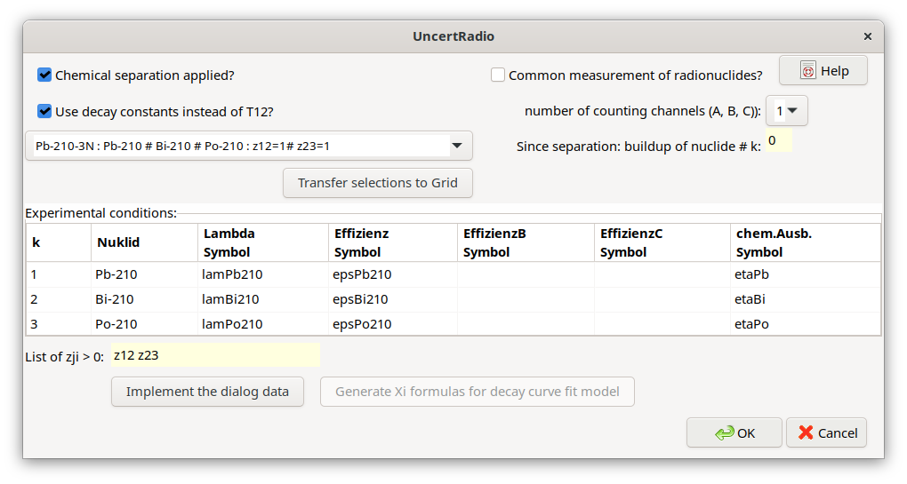
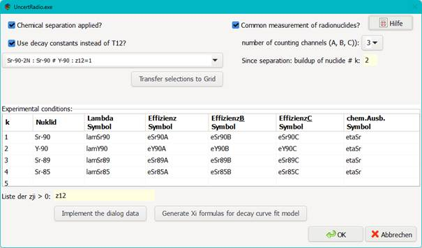
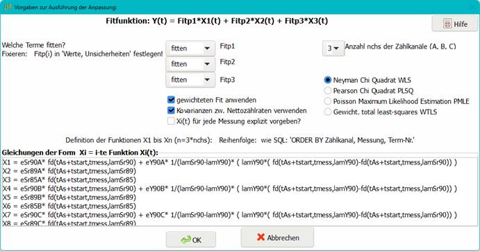

4.14. Anwendung von Zerfallsreihen¶
4.14.1. Basic procedure¶
Das Zeitverhalten der Atomanzahlen \(N_{i}(t)\) der Radionuklide (Glieder) in einer Zerfallsreihe wird prinzipiell durch ein System von Differentialgleichungen erster Ordnung beschrieben. Dieses wird durch die Bateman-Gleichungen beschrieben (1910 publiziert). Die Lösung führt zu Atomanzahlen \(N_{i}(t > 0)\), die durch radioaktivem Zerfall nach einer Zeitdauer \(t\) aus den bei \(t = 0\) vorhandenen Atomanzahlen \(N_{i}(t = 0)\) zu erwarten sind.
Aktuellere Arbeiten zur universelleren Lösung dieses Systems verwenden matrix-basierte Verfahren und sind auch für längere Zerfallsreihen automatisiert verwendbar. Für UncertRadio wird das von E. Levy in 2019 publizierte Verfahren verwendet, genauer gesagt, die im Kapitel 4 der Publikation eingeführte \(\mathbf{F}\)-Matrix. Levy fand, dass das Ergebnis einer sonst verwendeten Exponentialfunktion einer bestimmten Matrix sich selbst auf eine Matrix reduzieren ließ, eben die \(\mathbf{F}\)-Matrix. Da hier nicht die Atomanzahlen, sondern die Aktivtäten der Radionuklide von Interesse sind, wird die allgemein gültige Beziehung \(A_{i} = \lambda_{i} \cdot N_{i}\) verwendet, um eine \(\mathbf{F}\)-Matrix für Aktivitäten, statt Atomanzahlen zu erhalten. Der Rang der Matrix ist gleich der Anzahl der Radionuklide in der Zerfallsreihe, hier mit \(L.\) bezeichnet. Im Kapitel 4 bei Levy wird ein Algorithmus zur Berechnung der Matrixelemente von \(\mathbf{F}\) angegeben. Diese Matrix hat die Form einer linken Dreiecksmatrix. Eine wichtige Eigenschaft der Matrix \(\mathbf{F}\) ist, dass sie nur für das vorgegebene Zeitintervall \(t\) gilt; für andere Zeitintervalle muss \(\mathbf{F}\) jeweils neu berechnet werden.
Zur Berechnung der Elemente der \(\mathbf{F}\)-Matrix werden nur die Zerfallskonstanten \(\lambda_{i}\) der Radionuklide sowie die Werte der Verzweigungsverhältnisse \(z_{j,i}\) (mit \(j < i\)) benötigt. Letztere werden in einer Matrix (Rang \(L\)) angelegt. Nach dem Nullsetzen dieser Matrix werden darin nur die Elemente \((i,j)\) eingesetzt, für die \(z_{j,i} > 0\) gilt (außerhalb der Diagonalen). Bei einer Zerfallsreihe der Länge \(L\) und ohne Verzweigungen gibt es genau \(L - 1\) Werte \(z_{j,i}\). Die Diagonalelemente der Matrix \(\mathbf{F}\) enthalten die Abklingfaktoren \(\exp\left( - \lambda_{i}t \right)\) (keine Mittelung über die Messdauer \(t_{m}\)) oder \(fd(t,tm,xlam)\) (mit Mittelung über die Messdauer; siehe Abschnitt 5.8).
Für einen Vektor \(\mathbf{a}_{\mathbf{0}}\) der bei \(t = 0\) gegebenen Anfangsaktivitäten der Radionuklide der Zerfallsreihe wird der Vektor \(\mathbf{a}_{\mathbf{t}}\) der Aktivitäten nach einer Zeitdauer \(t > 0\) mit einer Matrixmultiplikation berechnet:
Für die Anwendung in UR wird dies als „Vorwärtsrechnung” bezeichnet. Hierin sind Aktivitäten in der Einheit Bq zu verwenden.
Wenn dagegen bezogene Aktivitäten betrachtet werden sollen, ist darauf zu achten, dass die dazugehörigen Kalibrierfaktoren zur Umrechnung von Nettozählraten in bezogene Aktivitäten keine solchen Zerfallskorrektionen enthalten dürfen, die bereits in der Matrix \(\mathbf{F}\) berücksichtigt sind. Unter Beachtung dieser Voraussetzung gilt die obige Matrixgleichung auch für bezogene Aktivitäten. Die Matrix \(\mathbf{F}\) wird hierbei nicht geändert.
4.14.2. Zerfallskorrektionen¶
Mit Gleichung (4.14.1) wird aus \(\mathbf{a}_{\mathbf{0}}\) der Vektor \(\mathbf{a}_{\mathbf{t}}\ \) berechnet; dieser Schritt wurde eingangs als „Vorwärtsrechnung” bezeichnet. Wenn die Zerfallsreihe speziell die Länge 1 hat, also nur ein Radionuklid in ein stabiles Isotop zerfällt, wird die Umkehrung, d.h. eine „Rückrechnung”, oft als „Zerfallskorrektion” bezeichnet: sie bezeichnet das Verhältnis \(a_{1}(0)/a_{1}(t)\). Die zum Zeitpunkt der Messung ermittelte Aktivität wird auf z.B. das Probeentnahmedatum „hochgerechnet” bzw. „rückgerechnet”.
Wenn die Länge der Zerfallsreihe größer als 1 ist, wird die Rückrechnung komplizierter. Wir betrachten dafür das Beispiel der Zerfallsreihe Pb-210/Bi-210/Po-210. Das in diesem Fall nicht einfache Problem besteht nun darin, aus den Messungen der Tochternuklide auf die Pb-210-Aktivität und deren Unsicherheit zum Zeitpunkt der Probeentnahme zu schließen.
Für die eleganteste Lösungsmethode dieser Aufgabe wird (4.14.1) als lineares Least-Squares-Problem interpretiert. Die Matrix \(\mathbf{F}\) wird als Planmatrix betrachtet und der Vektor \(\mathbf{a}_{\mathbf{0}}\) als der gesuchte Lösungsvektor behandelt. Der Vektor \(\mathbf{a}_{\mathbf{t}}\) stellt die Messungen dar. Eine Kovarianzmatrix \(\mathbf{U}_{\mathbf{a}_{\mathbf{t}}}\) kann zu \(\mathbf{a}_{\mathbf{t}}\) zugeordnet aufgestellt werden. Wir nehmen an, dass diese Matrix diagonal ist.
Mit diesen Annahmen kann die Least-squares-Aufgabe mit folgenden zwei Gleichungen gelöst werden (siehe CHAGR-ISO-01, Abschnitt 4.2):
Diese Gleichungen können rechentechnisch relativ einfach umgesetzt werden. Das Verfahren hat den großen Vorteil, dass der Vektor \(\mathbf{a}_{\mathbf{0}}\) und die dazugehörige Kovarianzmatrix \(\mathbf{U}_{\mathbf{a}_{\mathbf{0}}}\) praktisch im selben Schritt erhalten werden.
Alternativ kann ein Rekursionsverfahren verwendet werden. Der Literatur zufolge [Blobel, Lohrmann, Kapitel 3.4; Press et al., 1992, Kap. 2.3] werden für eine linke Dreiecksmatrix (\(\mathbf{F}\)) die Elemente des gesuchten Vektors \(\mathbf{a}_{\mathbf{0}}\) mittels eines rekursiven Schemas („Vorwärts-Substitution”) berechnet, das mit folgenden zwei Gleichungen beschrieben wird:
Um hierfür zusätzlich eine Unsicherheitsberechnung durchzuführen, müssen zuvor in der Gleichung für \(k > 1\) die auf der rechten Seite vorkommenden Werte \(a_{0;j}\) (Komponenten von \(\mathbf{a}_{\mathbf{0}}\)) auf die entsprechenden Komponenten des Vektors \(\mathbf{a}_{\mathbf{t}}\) zurückgeführt werden.
Die bei längeren Zerfallsreihen zeitraubende Berechnung gemäß Gl. (4.14.5), die Rückführung auf die Komponenten \(A_{i}(t)\), wird durch die Anwendung des LS-Verfahrens einfacher. Die Koeffizienten \(d_{k,i}\), bilden formal eine Matrix \(\mathbf{D}\), die aus Gl. (4.14.3) entnommen werden kann:
Für eine dreigliedrige Zerfallsreihe lauten die Gl. (4.14.5) bzw. (4.14.6):
(4.14.5) kann wie folgt umgeformt werden, indem die Unsicherheiten von \(A_{i}(t)\) auf die Unsicherheiten der Eingangsgrößen \(x_{j}\) zurückgeführt werden:
Die Sensitivitätskoeffizienten der Unsicherheitsfortpflanzung werden mit Faktoren \(d_{k,i}\) multipliziert. Je nach Größe der \(d_{k,i}\) haben diese das Potential zur Erhöhung der Unsicherheiten der \(A_{k}(0)\). Im Beispiel der Zerfallsreihe Pb-210/Bi-210/Po-210 wird dieser Effekt umso deutlicher, je größer das Zeitintervall \(t\) gegenüber der Halbwertszeit von Bi-210 wird.
UncertRadio enthält die für die Berechnung von \(\mathbf{F}\) sowie der Gleichungen (4.14.1) – (4.14.8) erforderlichen Routinen.
4.14.3. Einfluss auf die Erkennungs- und die Nachweisgrenze¶
Das Verfahren zur Ermittlung von Erkennungs- und Nachweisgrenzen nach ISO 11929 ist für die Einbeziehung von Zerfallskorrektionen bei Zerfallsreihen in einem Punkt anzupassen. Zur Erläuterung dient die Zerfallsreihe Pb-210/Bi-210/Po-210, für die Aktivität A1*(*0) des ersten Glieds der Zerfallsreihe berechnet werden soll. Die übliche Beziehung A1(0) =w*Rn zwischen Aktivität und Nettozählrate trifft nicht mehr zu, da die Aktivität auf zwei Nettozählraten, von Bi-210 und Po-210 zurückgeht.
Der entsprechende Zusammenhang wird durch eine Beziehung der Form A1(0)= w1*Rn1 + w2*Rn2 beschrieben. Ein modifizierter oder angenommener Wert der Aktivität \(\tilde{A}\) der Ergebnisgröße wird aus deren primärem Wert \(A_{1}(0)\) durch Multiplikation mit einem modifizierenden Faktor \(\tilde{q}\) erzeugt:
Die geänderten Zählratenwerte \({\widetilde{R}}_{nk} =\) \(\widetilde{q} \cdot {\widetilde{R}}_{nk}\) (\(k\)= 1,2) führen zu geänderten Werten \({\widetilde{R}}_{bk} = {\widetilde{R}}_{nk} + R_{0,k}\) und Unsicherheiten \(u^{2}\left( {\widetilde{R}}_{b,k} \right) = {\widetilde{R}}_{b,k}/t_{b}\) der Bruttozählraten, aus denen die Unsicherheit \(u(\widetilde{A})\) abgeleitet wird, basierend auf der Unsicherheitsfortpflanzung der Gleichung (4.14.9). Dies stellt einen Iterationsschritt bei der Berechnung der Nachweisgrenze dar. Werte für die zwei „Kalibrierfaktoren” w1 und w2 sind nicht immer leicht zu berechnen, weil sie auch Elemente der \(\mathbf{F\ }\)-Matrix enthalten. Sie können allgemeiner numerisch abgeleitet werden durch die partiellen Ableitungen der Ergebnisgröße nach den Nettozählraten \(R_{n,k}\):
4.14.4. Implementation of decay chains in UncertRadio¶
Die Implementierung erfordert eine Funktion, die im System der vom Benutzer in UR angelegten Gleichungen die komplexeren Berechnungen zur Zerfallskorrektion ausführt. Dazu wird in UR eine Funktion SDECAY zur Verfügung gestellt. Diese muss bei der Eingabe als eine eigenständige UR-Gleichung aufgestellt werden:
Symb0 = SDECAY(fmode, tdiff, tms, avg, Nstart, Ndest,
SymbAct1, SymAct2, SymbAct3, ...)
Diese Funktion berechnet mit dem oben angegebenen Least-squares-Verfahren einen Wert und eine Standardunsicherheit, die der Variablen auf der linken Seite der Gleichung, hier Symb0, zugewiesen werden (eine Aktivität in Bq).
Die Bedeutung der Paramater der Funktion ist in der folgenden Tabelle aufgeführt.
Variable |
Meaning |
|---|---|
fmode |
fmode Vorwärtsrechnung (=1) oder Rückwartsrechnung (=0) aus jeweiligen Ausgangsaktivitäten; integer |
tdiff |
tdiff Zeitdifferenz; UR-Symbol |
tms |
Messdauer; UR-Symbol |
avg |
avg mit (=1) oder ohne (=0) Messdauermittelung; integer |
Nstart |
Nstart Nummer des Zerfallsreihenelements, ab der eine Teilzerfallsreihe (Nstart >1) beginnen soll, oder die vollständige Zerfallsreihe (Nstart=1); integer |
Ndest |
Ndest Nummer des Zerfallsreihenelements, dessen Aktivität berechnet werden soll; integer |
SymbAct1, SymbAct2, … |
SymbAct1, SymbAct2, … Liste der UR-Aktivitäten-Symbole der Anfangs- oder Endaktivitäten der Zerfallsreihe (fmode entweder =1 oder =0); es können mehr als 3 Aktivitäten-Symbole eingegeben werden. |
Symb0 |
Symb0 UR-Symbol der Arrays Messwert und StdUnc, dem der SDECAY-Funktionswert als Messwert bzw. die Standardunsicherheit zugewiesen wird |
Bemerkung
Anmerkung: Die Werte von Nstart und Ndest beziehen sich immer auf die komplette Zerfallsreihe, auch wenn Nstart > 1 selektiert wurde.
Beispiel-Aufruf:
Symb0 = SDECAY(fmode, tdiff, tms, avg, Nstart, Ndest, SymbAct1, SymbAct2, SymbAct3)
cPb210_t1 = SDECAY(0, t2minust1, tmBi210, 0, 1, 1, cPb210_t2, cBi210_t2, cPo210_t2)„0”: (fmode): Rückwärtsrechnung; „t2minusT1”: (diff) Zeitdifferenz t2 – t1; „tmBi210”: (tms) Messdauer (von der Bi-210-Messung genommen); „0, 1, 1” bedeutet: „0”: (avg): ohne Korrektur des Zerfalls während der Messung; das erste „1”: (Nstart) die Zerfallsreihe beginnt mit Glied 1; das zweite „1”: (Ndest) das Zerfallsreihenglied, für das die Aktivität zu berechnen ist.
„Ausgehend von den Aktivitäten der drei Zerfallsreihenglieder (die letzten drei Symbole im Aufruf), die zum Zeitpunkt t2 gegeben sind, ist die Aktivität von Pb-210 (das erste Glied: Ndest=1) zum Zeitpunkt t1 (fmode=0) zu berechnen, ohne Korrektur des Zerfalls während der Messung; die Messdauer tmBi210 wird nicht benutzt.”
cPo210_t1 = SDECAY(0, t2minust1, tmBi210, 0, 2, 3, cPb210_t2, cBi210_t2, cPo210_t2)„0”: (fmode): Rückwärtsrechnung; „t2minusT1”: (diff) Zeitdifferenz t2 – t1; „tmBi210”: (tms) Messdauer (von der Bi-210-Messung genommen); „0, 2, 3” bedeutet: „0”: (avg): ohne Korrektur des Zerfalls während der Messung; „2”: (Nstart) die Zerfallsreihe beginnt mit Glied 2 (Teil-Kette Bi-210/Po-210); „3”: (Ndest) das dritte Glied der vollständigen Zerfallsreihe, für das die Aktivität zu berechnen ist.
„Die betrachtete Zerfallsreihe beginnt beim zweiten Glied (d. h. der Kette Bi-210/Po-210). Ausgehend von den Aktivitäten der zwei Zerfallsreihenglieder von dreien (die letzten drei Symbole/Parameter im Aufruf), die zum Zeitpunkt t2 gegeben sind, ist die Aktivität von Po-210 (Ndest=3) zum Zeitpunkt t1 zu berechnen, ohne Korrektur des Zerfalls während der Messung; die Messdauer tmBi210 wird nicht benutzt.”
Das Auftreten eines Aufrufs von SDECAY in einer oder mehreren Gleichungen führt zum Aufruf eines Zerfallsreihen-Dialogs:

Im oberen Bereich des Dialogs können bestimmte Messbedingungen definiert werden sowie eine von wenigen vordefinierten Zerfallsreihen selektiert werden, in diesem Fall die Zerfallsreihe Pb-210/Bi-210/Po-210. Die Wahlmöglichkeiten sind im Einzelnen:
Erfolgt eine chemische Separation? |
Im Falle der Sr-89/Sr-90-Messungen: ja, Abtrennung von Y-90 von Sr-90 |
|---|---|
Anzahl (1, 2 oder 3) des Radionuklids, das seit der Separation wieder angewachsen ist |
|
Gemeinsame Messung der Zerfallsreihenglieder auf demselben Detektor? |
Im Falle von Betastrahlern: meistens ja, hängt vom Design der Messungen ab |
Anzahl der Messkanäle (Energiefenster): |
üblicherweise 1; bei LSC-Messungen ggf. mehr als 1 Messkanal |
Vorgabe von Zerfallskonstanten anstelle von Halbwertszeiten? |
Ja: Zerfallskonstanten; Nein: Halbwertszeiten |
Einige vordefinierte Zerfallsketten stehen in der Datei List_DecaySeries.txt zur Verfügung, die von UR bei Bedarf gelesen wird:
List of available decay series:
Sr-90-2N : Sr-90 # Y-90 : z12=1
Zr-95-3N : Zr-95 # Nb-95m # Nb-95 : z12=0.0108# z13=0.9892# z23=0.944
Pb-210-3N : Pb-210 # Bi-210 # Po-210 : z12=1# z23=1
Pb-210-2N : Pb-210 # Po-210 : z12=1
Der Aufbau der Datei ist einfach:
jede Zerfallsreihe erhält einen Kurznamen (ein String);
dann die Namen der Radionuklide, durch # getrennt;
dann die erforderlichen Verzweigungsverhältnisse zji (mit \(j < i\)), die ungleich 0 sind.
Mit dem Button „Transfer selections to Grid” werden vordefinierte Symbolnamen in die Tabelle (Grid) für Nachweiswahrscheinlichkeiten (bei mehr als einem Messkanal bis zu drei) und chemische Ausbeuten übertragen, die aus dem Radionuklidnamen abgeleitet sind. Die Spalten nicht benutzter Nachweiswahrscheinlichkeiten bleiben leer.

Die vordefinierten Symbole in der Tabelle (Grid) können nun geändert werden. Anschließend werden die Symbole der Tabelle mit dem Button „implement the dialog data” in die Symbolliste des UR-Projekts übernommen. Für diese Symbole sind im TAB „Werte, Unsicherheiten” Werte und Unsicherheiten einzugeben.
Für eine spätere Nachbearbeitung des Dialogs kann dieser aus dem Menü Bearbeiten – Edit decay chain aufgerufen werden.
4.14.5. Example project¶
Pb210_Bi210_Po210_series_backwards_EN.txp
A short description is included in this example project file.
4.14.6. Generierung von Formeln für Abklingfaktoren¶
Bei radiochemischen Sr-89/Sr-90-Analysen sind Formeln für Abklingfaktoren zu erstellen. Beim Zählen der Beta-Strahlung tragen beide Sr-Isotope, Sr-89 und Sr-90, zur selben Zählrate bei. Der Zerfall von Sr-90 ist mit einem Anwuchs des Tochterprodukts Y-90 verbunden, das ebenfalls zur Zählrate beiträgt. Die vollständigen Formeln für diese Anwendung können bereits kompliziert sein, besonders, wenn Korrekturen für den Zerfall während der Messung einbezogen werden.
Für eine solche Anwendung unterstützt UncertRadio den Benutzer mit einer zusätzlichen Option zum Aufbau dieser Formeln als Strings, die dann in das Textfeld im Dialog zur Definition des Auswertemodells von Abklingkurven übertragen werden.
Diese Option kann aus dem Menü Bearbeiten – Edit decay chain aufgerufen werden. Sie benötigt keinen SDECAY-Funktionsaufruf innerhalb einer UR-Gleichung.
Für das zu Beginn dieses Abschnitts genannte Beispiel ist der Dialogaufbau wie folgt:

Mit dem Button Generate Xi formulas for decay curve fit model werden die entsprechenden Formel-Strings erzeugt und in das zugehörige Textfeld des Modell-Dialogs übertragen.
Das (programmierte) Ergebnis sieht (komplett) wie folgt aus:
X1 = eSr90A * fd(tAs+tstart,tmess,lamSr90) + eY90A * 1/(lamSr90-lamY90)* ( lamY90*
( fd(tAs+tstart,tmess,lamY90)-fd(tAs+tstart,tmess,lamSr90)) )
X2 = eSr89A * fd(tAs+tstart,tmess,lamSr89)
X3 = eSr85A * fd(tAs+tstart,tmess,lamSr85)
X4 = eSr90B * fd(tAs+tstart,tmess,lamSr90) + eY90B * 1/(lamSr90-lamY90)* ( lamY90*
( fd(tAs+tstart,tmess,lamY90)-fd(tAs+tstart,tmess,lamSr90)) )
X5 = eSr89B * fd(tAs+tstart,tmess,lamSr89)
X6 = eSr85B * fd(tAs+tstart,tmess,lamSr85)
X7 = eSr90C * fd(tAs+tstart,tmess,lamSr90) + eY90C * 1/(lamSr90-lamY90)* ( lamY90*
( fd(tAs+tstart,tmess,lamY90)-fd(tAs+tstart,tmess,lamSr90)) )
X8 = eSr89C * fd(tAs+tstart,tmess,lamSr89)
X9 = eSr85C * fd(tAs+tstart,tmess,lamSr85)

4.14.7. Zerfallsreihen-Literatur¶
Levy, E.: Decay chain differential equations: Solutions through matrix analysis. Computer Physics Communications, 2019, Vol. 234, S. 188-194.
[Blobel, Lohrmann, Kapitel 3.4]
Blobel, V., Lohrmann, E.: Statistische und numerische Methoden der Datenanalyse. Teubner Studienbücher Physik. 1. Auflage. Stuttgart: Vieweg+Teubner Verlag, 1998, 358 S. ISBN 978-3-519-03243-4
Kapitel 4.2 in:
Kanisch, G., Aust, M.-O., Bruchertseifer, F., Dalheimer, A., Heckel, A., Hofmann, S., et al.: Bestimmung der charakteristischen Grenzen bei der Aktivitätsbestimmung radioaktiver Stoffe – Teil 1: Grundlagen. Version Mai 2022. CHAGR-ISO-01
In: Bundesministerium für Umwelt, Naturschutz, nukleare Sicherheit und Verbraucherschutz, (Hrsg.): Messanleitungen für die Überwachung radioaktiver Stoffe in der Umwelt und externer StrahIung. ISSN 1865-8725. Verfügbar unter: https://www.bmuv.de/WS1517
In Vorbereitung: Kanisch, G., Aust, M.-O., Bruchertseifer, F., Dalheimer, A., Heckel, A., Hofmann, S., et al.: Zeitverhalten bei mehrgliedrigen Zerfallsreihen. Version Maixxx 2025. ZERFALL/MEHRGL
In: Bundesministerium für Umwelt, Naturschutz, nukleare Sicherheit und Verbraucherschutz, (Hrsg.): Messanleitungen für die Überwachung radioaktiver Stoffe in der Umwelt und externer StrahIung. ISSN 1865-8725. Verfügbar unter: https://www.bmuv.de/WS1517